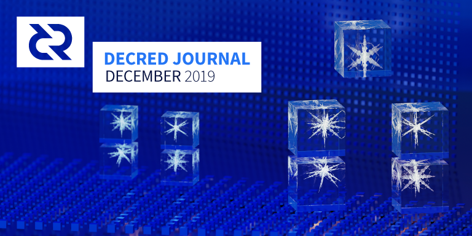

Decred月报 - 2019年12月

图片: Icyhedron by @saender
新年快乐！十二月的主要内容:
-
decred v1.5正式版于12月16日发布，感谢所有测试新版本的人。
-
已达到"区块头承诺"共识规则更改投票的PoS和PoW升级阈值。新的共识规则更改投票将在1月16日左右开始。
-
Decred闪电网络已在主网上启用！查看@jholdstock的网络浏览器。到目前为止，@ matheusd赢得了11个开放通道。记住：闪电网络仍然被认为是实验性的，请谨慎操作。
-
利益相关者批准了3万美元的预算，用于资助TinyDecred（开源Python工具包）的持续开发。
v1.5升级通知
经过约5周的测试和完善后，v1.5.0正式版发布。新版本带来了十月月报中的许多改进。有关完整的发行说明和下载，请访问GitHub上的发行页面。与往常一样，请在安装前验证下载的软件包。
如果您正在挖矿且尚未升级，建议您进行升级，以避免由于旧版本而导致块被拒绝的可能性。
升级和投票进度显示在voting.decred.org上，有关更多详细信息和图表，请访问dcrdata的提案页面。
最后，不要忘记headercommitments在VSP帐户和单独投票配置中为提案设置投票喜好。
开发进展总结
dcrd: 简化了检查点逻辑，从而为仅基于块头支持检查点铺平了道路。现在，调用者还可以配置检查点。从更大程度上，这些更改将有助于断开连接代码与下载逻辑的耦合，是对等并行下载必需具备的。
通过用两个整数替换条件堆栈，优化了txscript中条件执行逻辑的内存使用情况。
通过添加便捷功能增强了对bech32地址的支持，并确保可读的部分为小写字母以符合BIP173。
已修复内存泄漏，这对于涉及具有大量地址的钱包的设置尤其重要。
dcrwallet: 直接在dcrwallet中实现的 createrawtransaction，因此可以在SPV同步模式下或在钱包不同步时调用它。以前仅在RPC同步模式下可用，并且需要运行dcrd实例。
txsizes软件包已导出，以供dcrdex和dcrdata重用。
Decrediton: 大量Bug得到解决，包括Trezor钱包中的Bug，如果Trezor钱包的非dcrwallet发件人收到资金且从未正确设置Sequence字段，则可能触发该Bug。
Politeia:12月Politeia开发的主要重点是解决一个问题，即状态更改签名未保存，而另一个问题是开始投票签名仅是提案令牌的签名，应该是整个投票结构的签名（包括投票参数和选项）。这些问题对用户没有影响。这些修补程序不向后兼容，因此需要对元数据进行版本控制。由于无论如何都需要对开始投票元数据进行版本控制，因此第二个修订还添加了一些更改，这些更改将使支持RFP提案更加容易。
支持CMS的后端工作仍在继续，CMS UI的重新设计正在进行中。
dcrpool: 添加了对处理手动付款请求的后端支持，该支持允许在离开池之前清除所有剩余余额。为大多数组件增加了广泛的测试范围。
dcrlnd: 主网上的Decred LN映射处于活动状态。请注意，尽管LN已集成到Decrediton中，但仍应将其视为alpha状态。如果要在主网上使用LN，建议从testnet上启动，并谨慎在主网上测试。
修改了端口选择，以使集成测试更加可靠。Docker构建已添加到Github操作中。删除了decred 前缀。继续进行Docker示例的工作，以实现运行LN集群所需的全部自动化simnet环境。
dcrdex: 实施的新组件包括BTC交易钱包、 用户订单列表后端以及市场经理，订单路由之间的进一步整合。
其他变化：订单承诺已添加到规格中，订单时间戳解析度从秒更改为毫秒，完成了对硬币 ID的切换，从而可以在将来支持更多资产。
DEX的剩余任务是：
- 服务器：将所有子系统结合在一起（正在审查中）和终端应用程序（正在进行中）的DEX管理器
- 客户端：Web用户界面（正在审核），终端用户界面（正在草稿中），DCR钱包（正在审核中），管理员和永久性数据库（正在审核中）
- 服务器和客户端的RPC服务器
dcrandroid: 经过数月的工作，对用户界面的重新设计终于合并了。这一重大变化还包括多钱包支持（同时运行多个钱包）。剩余的Java代码和文件已转换为Kotlin。在后端，向dcrlibwallet 添加了多钱包支持。
UI的其它改进包括显示进度条和重新扫描时的估计剩余时间，并且QR码扫描仪具有检测付款金额的能力。
安全性增强：用户现在可以使用指纹解锁应用程序，地址验证已移至安全性工具。
dcrios: UI增强功能不断得到更新，其中包括更新的色彩和改进的菜单。
dcrdata: 合并了初始CSPP 混合检测，错误修复和代码维护。
tinydecred: 添加了当前投票议程的显示和菜单，以设置投票选择，使用Black工具自动设置代码格式，错误修复和测试改进。
docs: 文档已针对v1.5版本进行了更新。添加了有关骗局空投的警告。分叉术语已添加到词汇表中。
decred.org: 较小的内容更新，依赖项升级。
其它:
- @degeri 发布了一个名为DownloadHawk的站点危害通知程序，该通知程序会监视Decred下载并在遭到篡改时发出警报。
- 安全研究人员可以通过提交发现的Decred安全问题以赚取高达$25K的佣金。有关详细信息，请访问bounty.decred.org。
12月的开发活动统计：分布在15个存储库中的41个活动PR，242个主提交，添加5.5万行和删除4.5万行。每个存储库的贡献来自1-5个开发人员。
人员
欢迎新的贡献者，其代码已合并到主版本：vdg0 (tinydecred)。
祝贺decred.org上列出的新贡献者：
- Amir Massarwa (@amass, Developer)
截至1月3日的社区信息统计
- Twitter 粉丝: 40,897 (+256)
- Reddit 订阅: 9,708 (+5)
- Matrix 用户: 504 (+30)
- Slack 用户: 6,881 (+9)
- Discord 用户: 2,628 (+36), 已验证发布: 407 (+28)
- Telegram 用户: 2,838 (-65)
- YouTube 订阅: 3,960 (+40)
- Facebook 粉丝: 3,552 (+245), likes: 3,223 (+196)
- LinkedIn 粉丝: 674 (+12)
- GitHub dcrd 星星: 528 (+8), 分叉: 1,458 (+58)
治理
十二月，社区开发基金获得了14,406 DCR，并花费了10,106 DCR。使用12月份的每日DCR/USD每日汇率$18.32计算，得出的收入为$264K，支出为$185K。以11月的平均每日汇率$19.97计算，当月完成工作的美元费用为$202K。截至1月1日，库存余额为643,836 DCR（1,090万美元，16.87美元）。
对于Politeia来说，12月是一个非常安静的月份，没有提交新的提案。11月的两个提案在12月进行了投票：
- 该TinyDecred budget预算提案得到85％的批准和32.6％的选民参与。
- 该PlusBit POS App得到39％的支持和30.6％的拒绝。
Ditto已于1月7日提交了他们的第3阶段提案，讨论正在进行中。
在对公共订单簿进行分析之后，就有关流动性水平的问题提出了疑问，i2 Trading提供了完整的交易历史日志，以便对其详细表现进行详细检查。0公司正在开发一套工具，用于根据其提案中指定的标准审核i2的绩效。
Politeia Digest已暂停，Politeia活动的水平很低，它将在提交新提案时返回。
网络
全网算力：12月份的哈希率以〜370 Ph/s开始，以〜400 Ph/s结束，最低达到275 Ph/s，并在整个月达到522 Ph/s的峰值。截至1月2日的池哈希率分布：Poolin 32％，UUPool 24％，lab.antpool.com 12％，F2Pool 2.2％，BTC.com 1.8％，BeePool 0.09％，CoinMine 0.09％，suprnova 0.02％，Luxor 0.02％和其它dcrstats.com占28％。算力分布是近似值，无法准确确定。
在11月保持在400-450 Ph / s之间之后，在12月，哈希率进一步下降并短暂低于300 Ph / s（上一次在2019年4月短暂跌至该水平时）。
Staking: 根据dcrstats.com的数据显示当月平均票价为137.5 DCR（+2.7）。价格在123.1-158.76 DCR之间变化。锁定金额为537-561万DCR，相当于可用供应量的49.75-51.90％。
自从sdiff算法更改以来，门票价格再创新高158.76，而51.9％的历史新高是PoS参与。
节点: 整个12月，平均有175个公共侦听节点和391个正常节点。版本分布为：56％使用dcrd v1.4，10％使用dcrd v1.5，8.8％使用dcrd v1.5 dev和RC build，6％使用dcrwallet v1.4，1.9％使用dcrwallet v1.5。
在12月12日，所有DCR流通的16.1％，参加CoinShuffle ++混合。
截止到1月8日，Decred主网的闪电网络地图显示有11个节点和13个通道。
整合
欢迎使用0.99％的费用来使用新的 VSP 99split.com。
dcr.pos.fans VSP 已从清单中删除，因为事实证明它不可靠。
警告：Decred Journal的作者不了解上述任何服务的可信赖性。在将您的个人信息或资产信任给任何实体之前，请先进行自己的研究。
外联活动
12月的外展活动以v1.5.0为特色，@ davecgh 发布了Decred Assembly的共识变更并且在Decred in Depth。Decred in Depth的附加剧集和决定大会在闪电网络上精选@matheusd。网站更新的副本已放入GitHub，并提交给#web_ops团队进行汇编。新网站预计将于1月份发布。
本月剩余的大部分时间都集中在对2020年的反思，讨论和计划上。@ bee的营销策略帖子促使#proposals中进行了激烈的讨论，因为Ditto和@Dustorf希望准备下一份提案。@Dustorf进行了一项调查，以征询社区对有关地理位置，细分市场和可能应用的优先级的意见。他还将在下一个提案之前发布营销支出摘要。
Ditto 12月的成就：:
- CoinDesk年中-回顾专栏分权治理“是时候做到分散式治理” @ JY-P。
- CoinDesk 文章.ORG域，其中包括来自@richardred想法。
- Off the Chain播客与Anthony Pompliano和@akinsawyerr谈论非洲的加密货币和Decred的独特治理。
- NasdaqTV TradeTalks 部分，@ akinsawyerr谈论非洲的区块链。
- 安排并参加了纽约市@akinsawyerr的媒体之旅，他亲自与The Block，Fortune，Pomp的Off the Chain播客和Chain Reaction播客（待出版）的记者见面。
- 使用@akinsawyerr（在圣诞节那天播出）来确保雪茄和加密播客的安全。
- 为@akinsawyerr参加CES的数字货币论坛（1月7日）准备了小组简报文档并进行了媒体宣传。安排他与CoinDesk的Michael Casey和Libra协会的Dante Disparte一起在“Libra效应” 圆桌上发言。
- 率先担任Decred在2019年Twitter投票中最值得关注的成就。赢家是隐私实施，得票率为36.6％，其次是Politeia和DAO（33.1％）。475人参加了投票。
- 为社区确定和共享机会，与Crypto Twitter互动并向外界宣传Decred。最近，社区一直对Decred的独特承包商模型感到不安，特别是对于开发人员而言。社区使用#cryptodevss贡献了40多个独特的帖子，并使用新的@dcrgoodfirst句柄作为对有兴趣向Decred做出贡献的开发人员的良好先发问题的新汇总。
- 制定了第3阶段Ditto PR提案，该提案将于1月中旬在Politeia上发布。
活动
参加：
- 11月6日- 比特币和区块链聚会 -墨西哥瓦哈卡。@ evok3d代表Decred。（照片，11月遗漏）
- 12月4日- Decred Demo -澳大利亚墨尔本。@eSizeDave和@zohand被邀请在区块链中心新推出的Talk＆Trade格式中展示Decred。预计Politeia和Decrediton的演示将花费30分钟，但总时间超过了1.5个小时，这使他们可以谈论Decred的关键方面，并在大约20位参与者之间进行了辩论。(报告)）
- 12月7日 - 区块链社区聚会 - 墨西哥墨西哥城。由Bitcoin Embassy Bar的Blockchain Bajio组织。(照片: 1, 2, 3)
- 12月12日至13日 - Labitconf - 乌拉圭蒙得维的亚。活动的2天中，Decred的Latam团队由7人组成。由于参加活动的许多项目都对Decred有所了解，因此先前在Latam建立知名度的努力就显而易见了。在一个地方没有摊位使团队可以无处不在，他们建议针对这种规模的活动（约1000位访客）考虑采用这种方法。检查完整报告以了解重要的交互作用和其他详细信息。
- 12月15日- 加密与圣诞节 -澳大利亚墨尔本。Decred Australia与Blockchain Center，Cointree和e-Pocket共同组织了一个聚会。@eSizeDave和@zohand向Decred简要介绍了它的成就，并向大约20位与会者进行了介绍，并借此机会与他们进行了更直接的交流。(报告)
- 12月20日- 比特币周年纪念日 -墨西哥墨西哥城。由于早先建立的良好关系，比特币大使馆邀请Decred Latam团队出席并赞助该活动。@francov _，@ victorarubin和@luisantoniocrag 整夜都与大多数与会者谈论了Decred。(报告)
即将来临：
- 1月14日 - GoCracow #7 -波兰克拉科夫。@kozel将把Decred呈现给Go开发人员观众，并详细介绍为DAO工作的一些细节以及为该项目做出贡献的方式。
- 1月29-31日- 加密101在线峰会 -在线。@lukebp将概述Decred的2020年计划。
- 2月4日至6日- 非洲技术峰会-卢旺达基加利。@akinsawyerr将在货币与区块链峰会上发表演讲。
- 4月13日至17日- 墨西哥瓜达拉哈拉Talent Land的区块链土地。Decred将成为Talent Land的赞助商，并在Blockchain Land的展位上出席。
- 5月，待定日期待定- BitConf -巴西圣保罗。
媒体
精选文章：
- Decrediton 的使用来自 @mm (stakey.club, 当然也有西班牙语)
- Decred对链上治理有答案吗？来自Kerman Kohli（medium）
- Decred On-chain:@permabullnino的票务池VWAP(medium)
- @richardred(blockcommons.red)在各种项目中的“PoS” 概述
- 是时候讨论@ jy-p的去中心化治理了，这是CoinDesk年度回顾的一部分(coindesk)
- 由@degeri(blog.decred.org)介绍DownloadHawk
翻译：
- @pablito 用西班牙语建立Decred全节点的经验
- Decred Journal-2019年11月被翻译成阿拉伯语（@arij），中文（@Dominic），西班牙语（@luisantoniocrag和@francov_）和波兰语（@kozel）。谢谢你们！
视频:
- Decred Assembly Deep Dive-闪电网络@matheusd (youtube)
- TradeTalk：非洲的区块链和新兴技术。@akinsawyerr谈到了治理对于非洲加密货币前景的重要性。(nasdaq.com)
音频:
- POV加密105-战斗之夜XI：使用@Checkmate的BTC，ETH，DCR。有关各种区块链主题的比特币，以太坊和Decred观点的深入辩论。 (youtube)
- Decred in Depth Ep. 15 @davecgh的15个功能提供了v1.5的深入概述以及块头承诺共识规则更改建议。Dave详细介绍了该提案所涉及的内容，以及该提案获得批准后将如何改善网络。(youtube, soundcloud)
- Decred in Depth Ep. 14 - @matheusd讨论了如何通过他的票务拆分工作进入Lightning Network开发，将Lightning Labs的lnd移植到Decred所面临的挑战，以及btcd基础的各种帮助方式。 (youtube, soundcloud)
- Off the Chain - 加密如何弥合银行与非银行之间的鸿沟。@akinsawyerr对Anthony Pompliano进行了有关加密货币和非洲的广泛采访。 (youtube, spotify)
- Cigars and Crypto 73 - @akinsawyerr谈论非洲和Decred。(anchor.fm)
@ AGNFAB1发布了更多他的Decred艺术作品。先前的作品：Christmas, Banking on Decred, Tacotime Trilogy, Decentralized Credits.
社区讨论
选定的Reddit帖子：
- 这篇链接到有关Decred安全性的Twitter 帖子吸引了39条评论，其中一位用户详尽地争辩说交易所可以执行攻击以耗尽财政部。
- 这篇帖子问人们除了使用抵押和发送给交易所外，还使用Decred进行什么操作。
选定的推特:
- @decredproject 民意调查询问了2019年最值得关注的成就，得到了475条回应。37％用于隐私，33％用于Politeia / DAO，19％用于闪电网络，11％用于DEX。
- @DCRComic的 Merry Stakemas。
- @ buck54321的TinyDecred提案运动针对的是年长的选民。
- @Exitus发表关于v1.5暗模式的推文。
- @Dustorf的年份（以Decred为单位）。
DCR漫画:
- DEX.
- Ticket Rick - Rick＆Morty动画节目中对Pickle Rick的引用。
- Collective Intelligence.
话题:
- 使用DCR挖矿设备为鸡舍和蘑菇农场供热。
市场
12月DCR交易价格在15.61-20.77USD/BTC 0.0023-0.0029之间。每日平均为$ 18.32。
相关外部信息
一个规范的地层V2开采协议是由Braiins在十一月公布，继夏季公布。新协议解决了V1中的许多问题，并在哈希矿工和池之间提供了更有效，更安全的通信。V2的一大功能是一种新模式，在此模式下，矿工可以选择要包含在区块中的交易和版本位，从而从池中消除这种力量。该模式是可选的，并且不是避免损害采用的默认模式。Braiins与Matt Corallo和Peter Todd一起参加了Reddit上的全面AMA。
VTC又遭受了51％的攻击，并重组了600个区块，但这次攻击者似乎无法从攻击中获利，因为Bittrex（可能的目标）一被发现就禁用了交易。
沃顿商学院的加密货币治理研讨会启动了 cryptogov.net，其中包括“ 治理评估 ” ，这是对由不同项目的成员汇编的有关区块链治理的一系列标准问题的自我评估的答案。Decred是在启动前已上传答案的3个项目之一。@akinsawyerr参加了2019年7月在沃顿举行的活动，该项目是该项目的发起者，并在@richardred的一些协助下带头准备了Decred的答案。
Zcash社区情绪调查的结果已发布。参与者是社区咨询小组和论坛用户，所有PoW矿工都没有选择使用提供给他们的投票方法来发信号。选民可以对每一项提案都投赞成票或反对票，表示对所有13项提案都表示支持。
对于那些没有继续将20％的整体奖励用于发展资金的提案，几乎没有什么支持。
62位社区咨询小组成员中有48位对民意调查做出了回应。方案＃12（EFF / Zfnd分配了60％，有额外顾问的40％用于主要拨款计划）和方案10（“大妥协”，分配与方案＃12类似）在接近75％的支持下效果很好。选项13（“保持简单”，50％的ECC / Zfnd拆分）也获得了50％以上的批准。
在104个符合条件的论坛中，有77个论坛用户对此提案进行了投票（2019年3月之后创建的帐户不符合条件）。＃12在该组中以70％的支持率表现最好，＃13在50％以上的支持下也表现良好。
所有的循环ZEC的1％投在非官方的股权，加权轮询，这个选区中最流行的选择是＃10，＃8（仅2年以上的ECC 20％的资金）。
Zcash基金会决定开发选项12并进行一些改进，然后回撤大多数改进以响应后退。提案的最终修订版将提交另一个社区小组讨论，并由论坛用户投票确认。
ZIP 1012已经成为一种情况，涉及将块奖励以20％的价格延长4年，其中ECC支付35％，Zfnd支付25％，额外的“主要补助金”支付40％。对该提案的更改涉及使其由Zfnd更加直接地控制，并且取消了一项限制，该限制将使ECC排除在“重大赠款”之外而无法获得任何资金。Zfnd提案中增加的另一个更改是“呼吁并鼓励发展分散式投票和治理”。
Zcash基金会还向 Open Privacy 捐赠了40,000美元，用于开发分散式消息传递和支付平台Cwtch。
IOTA陷入混乱，由于协调员的错误而被暂停了15个小时。
Twitter的Jack Dorsey 宣布 Twitter将资助其平台的去中心化版本的研究。
Moocowmoo是Dash Core顾问和托管主节点的提供者共享服务，在关闭该服务的过程中消失了，留下了一些客户端等待较长时间的DASH。在关注度增加之后，Moocowmoo重新浮出水面，DASH 在一周内开始流回其合法所有者。
Bitfinex 宣布将从12月3日开始支持Lightning Network的存款和提款。
受欢迎的以太坊区块浏览器Etherscan.io被中国防火墙防火墙拦截。没有给出原因，其他区块浏览器仍然可以访问。
Google 禁止其Play商店中的Metamask（一款用于与Dapp进行交互的浏览器应用）涉嫌进行秘密采矿。虽然最初拒绝了他们的上诉，但几天后该禁令被推翻。
Google还在YouTube上清除了许多与加密有关的视频，然后在确定这是一个错误之后将其恢复。该事件显然使许多受影响的YouTube内容制作者都在寻找分散的替代品。
CipherTrace的一份加密货币反洗钱报告提到Decred是具有隐私功能的加密货币。
由于垃圾注册的急剧增加，Keybase上的Stellar空投已经过早终止，其中排除了100,000个帐户，流明的最终分配分配给了282,000个用户。
/ r / ethtrader甜甜圈实验继续进行，推出了一个特殊会员资格，该会员可以每月订阅5,000个甜甜圈来解锁诸如名称徽章和在评论中张贴gif的特权。
Maker Foundation 以定制的方式以2750万美元的价格向Dragonfly Capital和Paradigm 出售了MKR总供应量的5.5％，这将使MKR更加重视亚洲市场。
在为Tezos启动托管抵押服务几个月后，Coinbase交易所现已成为XTZ网络上排名第一的面包师。
“ MetaCartel”发布了一份白皮书，该白皮书试图在原始且臭名昭著的DAO的模型中创建盈利性投资DAO，但该模型建立在避免复杂性的Moloch的基础上。Moloch DAO 宣布对v2进行了更新，该更新有助于在不违反证券法规的情况下将Moloch与法人配对。
Algorand中继节点投票接受了对他们从Algorand基金会获得的代币的归属时间表的修正案。该修正案将获得的Algo代币中继节点数量增加了25％，但将归属时间表从2年延长至5年，并在Algo价格上涨时采用了加速机制。到此结束了一个情节，该情节开始并于9月被错过，中继节点投票决定暂停自己的奖励，直到可以同意更改归属时间表为止。
大约有81个Algorand中继节点，并且这些提案以大约55个节点的赞成票获得了批准（加上很多弃权，有些则没有表决）。Algorand节点已完成KYC / AML检查，并与基金会达成了法律协议，因此，对这些提案的投票过程的一部分涉及使用DocuSign签署修正案并将其副本退还给基金会。对于希望参与放样并获得奖励的Algo持有者，还必须进行KYC / AML检查。
1月初发布的针对SHA-1哈希函数的新攻击具有一种实际应用，可以模拟PGP / GnuPG用户并以他们的名字签名任何文档。攻击成本估计为45,000美元，并且随着计算成本的降低而降低。如果使用GnuPG，请将其配置为不使用SHA-1进行签名或升级到2.2.18+。Decred v1.5.0发行版的签名不使用SHA-256，因此不受影响。
关于月报
这是Decred Journal的第21期。有关所有问题，镜像和翻译的索引，请参见此处。
在经过最少的健全性检查之后，来自第三方的大多数信息都会直接从来源中继。Decred Journal的作者无权验证所有声明。请当心诈骗，并自行进行调查。
感谢 (字母排列):
- 写作和编辑: akinsawyerr, bee, Dustorf, degeri, fguisso, kozel, margaret_mei, richardred, s_ben
- 评论和反馈:buck54321, chappjc, Checkmate, davecgh, dnldd, lukebp, matheusd, raedah
- 标题图片:saender
中文社区
欢迎同时关注英文月报了解更多最新消息
中文月报相关意见欢迎提交到Github